A good mantel can completely change the feeling of a room. These 19 mantel decor ideas help you create a fireplace that feels intentional, cozy, and personal without making it look like you emptied an entire home decor aisle onto one shelf. I've styled fireplaces in different ways over the years, and I've learned that the trick usually comes down to scale, layering, texture, and restraint.
The best part? You don't need expensive decor. A beautiful mirror, a thrifted vase, a few books, or even branches from your yard can create a surprisingly polished look.

Common Mantel Decorating Mistakes to Avoid
Even beautiful decor can look awkward when the scale doesn't work.
Avoid filling every inch of the mantel. Negative space gives your favorite pieces room to breathe.
Also avoid using accessories that all have the same height. Mix tall, medium, and low pieces to create movement.
Another common mistake involves choosing too many unrelated colors. Pick a small palette and repeat those colors across the mantel and surrounding room.
Finally, don't copy a Pinterest arrangement piece for piece. Use it as inspiration, then adapt the idea to your fireplace, your furniture, and your personality.
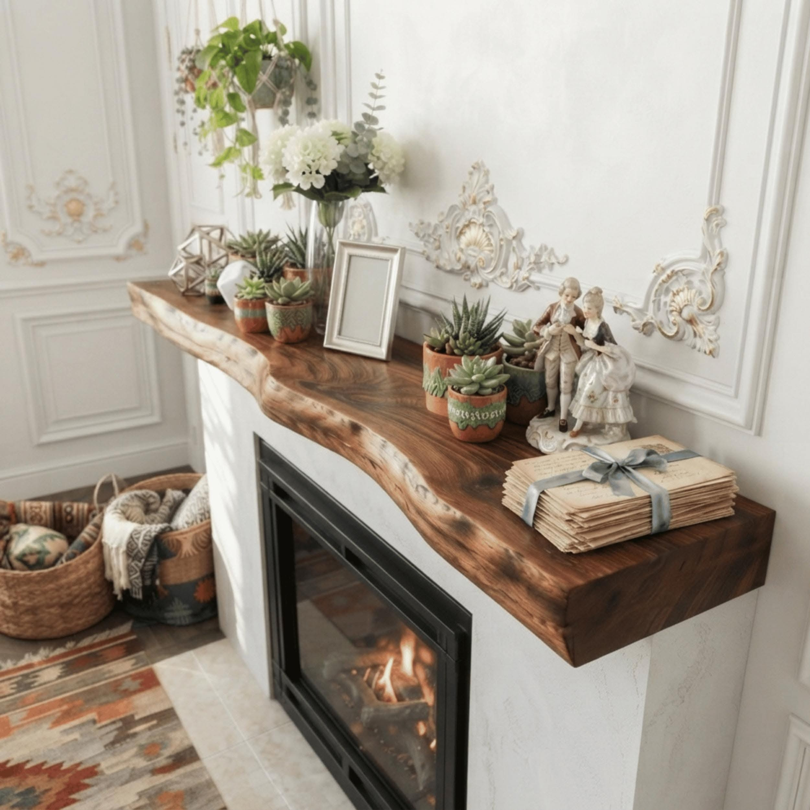
How I Balance Mantel Decor
When I finish styling a mantel, I step back several feet and look at it from the sofa.
Does one side feel heavier? Does the centerpiece disappear? Does everything sit at exactly the same height? If so, I move something.
I also like using this simple formula: one anchor, plus two or three supporting pieces, plus one texture or natural element.
For example, you could combine a large mirror, two ceramic vases, three candlesticks, and a few branches.
That gives you enough variation without creating visual chaos.
And don't forget the fireplace itself. The mantel, overmantel, firebox, and hearth work best treated as one complete composition rather than styling the shelf as its own separate decorating zone.
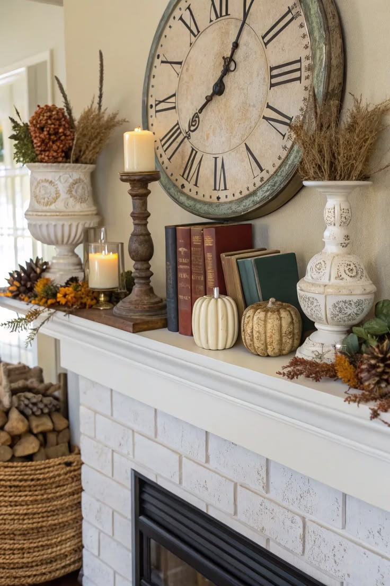
19 Mantel Decor Ideas to Try
1. Create a Collected Mantel With Meaningful Objects
This might be my favorite approach.
Instead of buying everything at once, collect pieces that actually mean something to you. Add a ceramic vase from a trip, a vintage frame from a thrift store, a family heirloom, an interesting sculpture, or artwork from a local artist.
The goal isn't perfection. The real goal is an intentionally curated space, not a showroom.
That distinction matters. A showroom can look beautiful, but your living room should feel like someone actually lives there.
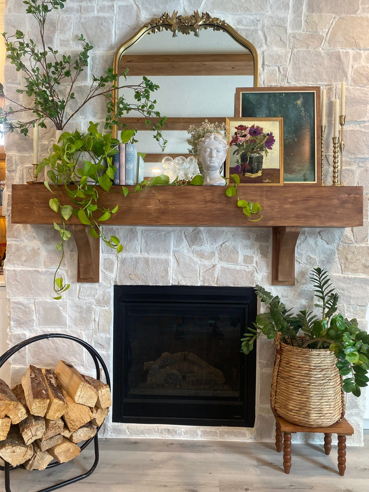
2. Change Your Mantel Decor With the Seasons
You don't need an entirely new fireplace design every season.
Keep the major pieces consistent and change a few smaller accessories.
For spring, try fresh branches, soft florals, light ceramics, and botanical artwork.
For fall, switch to dried leaves, pumpkins, warm-toned pottery, and amber glass.
For winter, bring in evergreen branches, pinecones, candles, and cozy natural textures.
A mantel is a natural place to mark the seasons changing, mostly because of how prominent its position already is in the room.
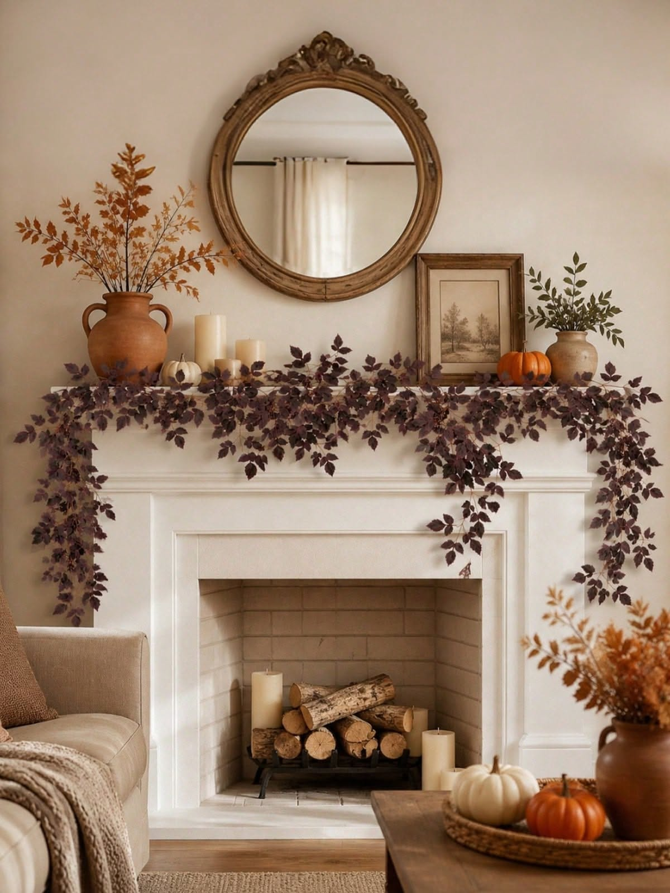
3. Decorate a Mantel With a TV
Yes, the television can coexist with attractive mantel decor. We can stop pretending everyone has a separate room exclusively for watching television.
If your TV sits above the fireplace, use accessories that frame the area without competing with the screen.
Keep the pieces low and visually simple. You can also use darker accessories around a dark television to help it blend into the overall composition.
Mounting a TV above the mantel has become such a common decorating solution that styling specifically around it is practically its own category now.
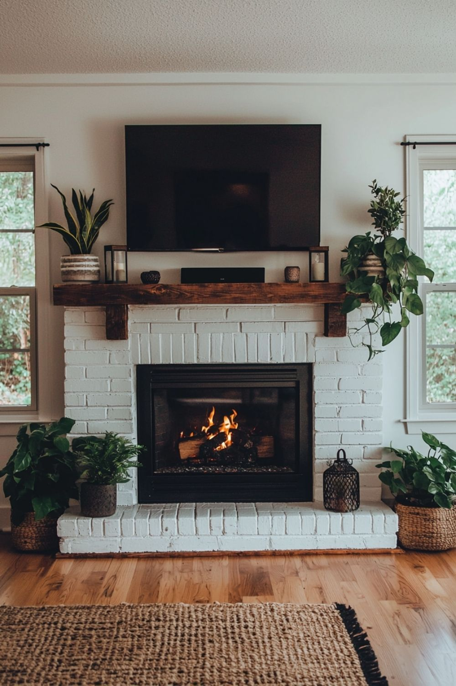
4. Use One Oversized Artwork
When in doubt, go bigger.
A large painting can completely transform the fireplace without requiring dozens of accessories.
Choose artwork that takes up substantial visual space above the mantel, then keep the shelf relatively quiet.
Oversized artwork creates a strong focal point on its own, while letting the surrounding decor support rather than compete with it.
This idea works particularly well if you want your mantel decor to feel sophisticated rather than busy.
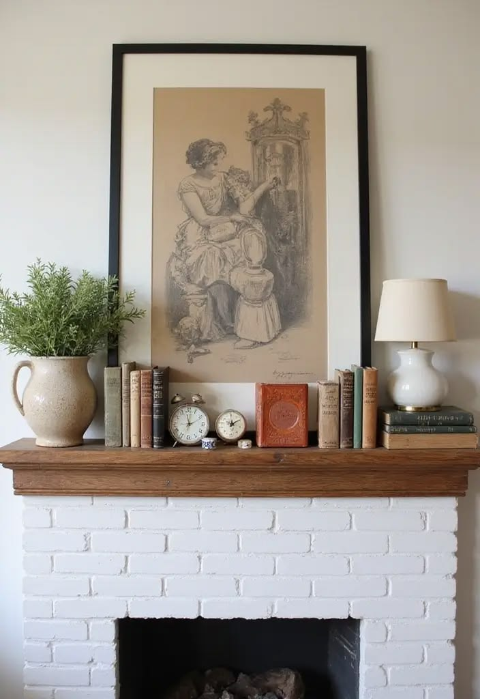
5. Make a Cottage-Style Mantel With Soft Layers
For a cozy cottage fireplace, combine soft botanical artwork, cream ceramics, aged brass, small stacks of books, fresh or dried flowers, and woven textures.
Don't make every item perfectly symmetrical.
A slightly imperfect arrangement creates the relaxed feeling that makes cottage interiors so appealing.
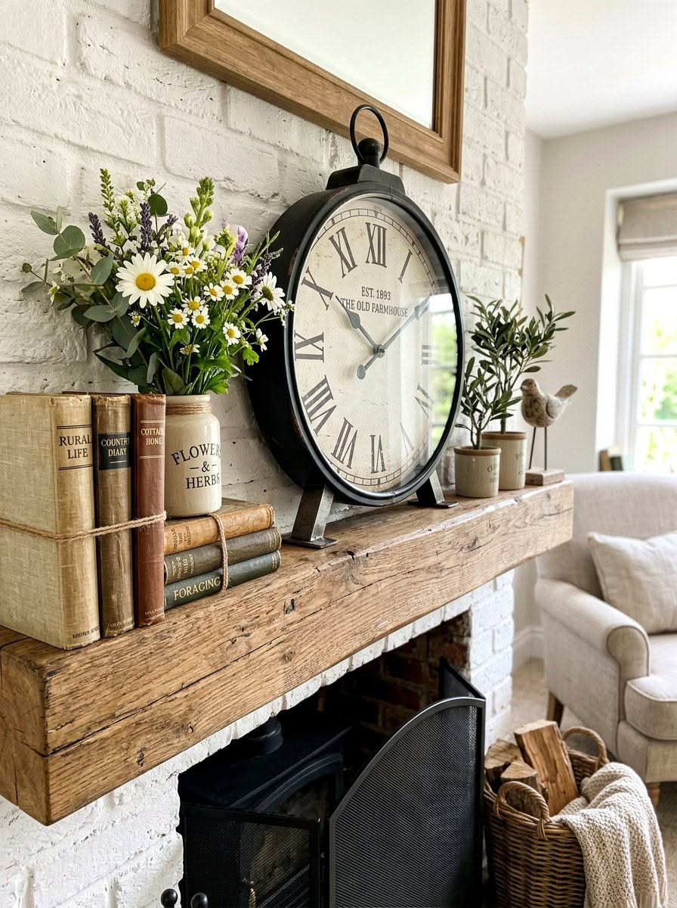
6. Add Sculptural Decor to a Modern Mantel
Sculptural pieces work especially well when your fireplace has a clean architectural shape.
Try an abstract ceramic form, stone sculpture, metal object, or unusual wooden piece.
A sculpture gives you something three-dimensional rather than another flat rectangle.
Contemporary fireplaces without a shelf in particular benefit from three-dimensional sculpture, since flat artwork can visually disappear against them.
That same principle works on a mantel. Texture and dimension keep the display interesting from different angles.
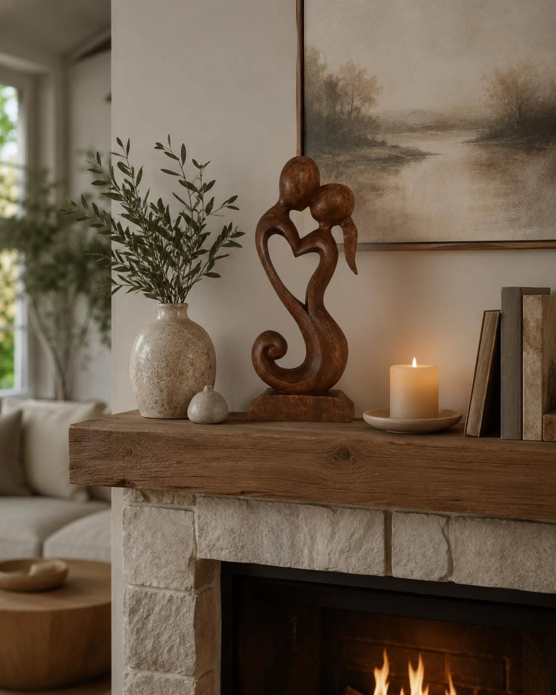
7. Use Family Photos for a Personal Mantel
A mantel gives family photographs a natural place to live.
Instead of lining up ten frames, choose two or three meaningful photographs and mix them with decorative objects.
Use different frame sizes but keep some connection between the finishes. For example, combine black frames with one vintage brass frame.
The result feels personal without turning your fireplace into a family photo archive.
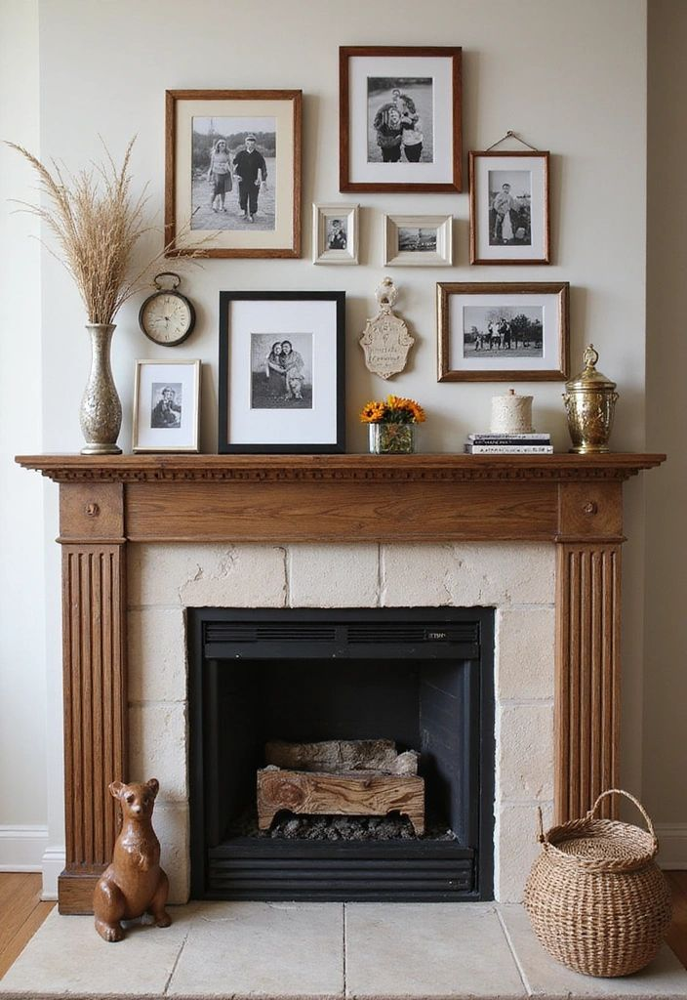
8. Create a Moody Mantel With Dark Colors
Not every fireplace needs to look light and airy.
Try deep brown, charcoal, navy, burgundy, olive, or forest green accessories against a neutral fireplace.
Rich, moody colors like navy, dark brown, burgundy, and burnt yellow give a mantel display real drama without needing a loud palette to do it.
I like this approach particularly in rooms with warm wood floors or leather furniture. The darker accents help the fireplace feel grounded.
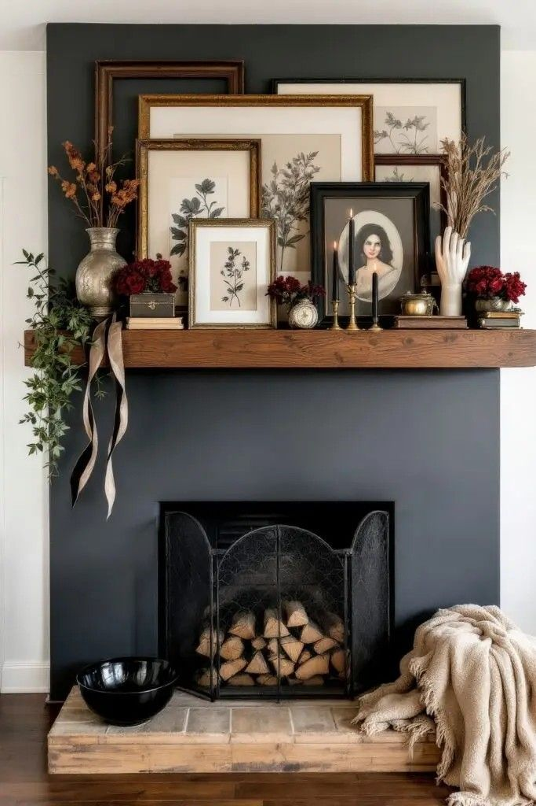
9. Try Greenery for an Organic Mantel
A long eucalyptus garland can soften a hard fireplace surround.
For something simpler, place one leafy branch in a tall vase and let it extend naturally above the mantel.
Greenery works particularly well with white fireplaces because the foliage adds contrast without overwhelming the room.
You can also use faux stems if you don't want to replace fresh greenery every few days.
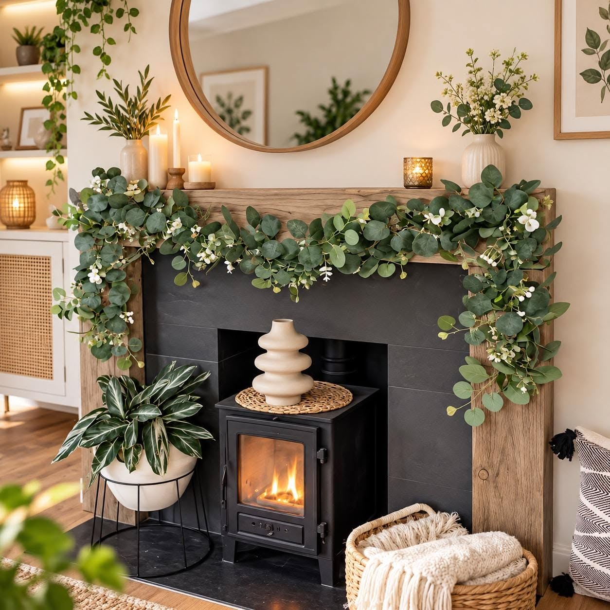
10. Use Books to Add Height and Texture
Books make excellent mantel accessories because they can perform two jobs at once.
They add personality and give smaller objects additional height.
Stack two or three books horizontally and place a small vase, candle, or sculpture on top. You can also lean a book or use several stacked books beneath a decorative object.
Stacked books add real texture to a display too, giving smaller decorations a foundation to actually sit on.
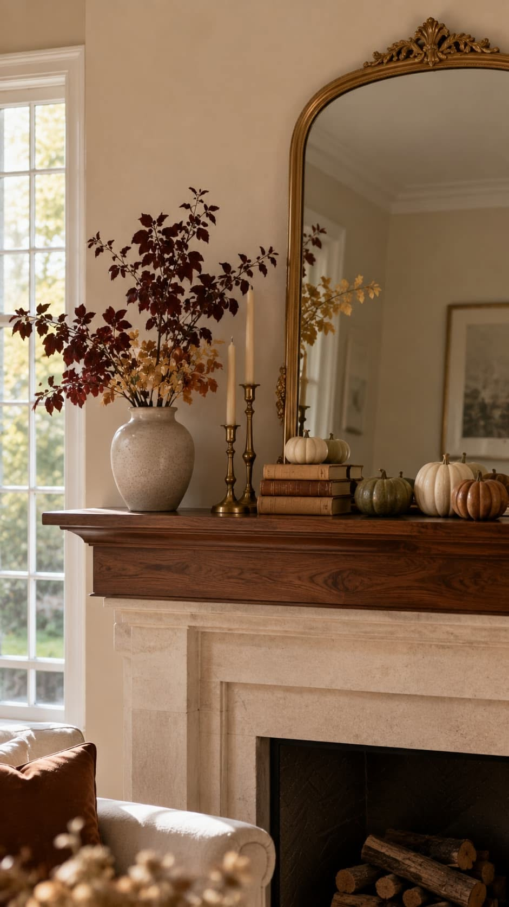
11. Make a Rustic Mantel With Vintage Finds
Head to a thrift store before you head to an expensive decor shop.
Vintage frames, old books, brass candlesticks, pottery, wooden boxes, and antique vessels can give your fireplace much more character.
I especially like mixing one or two vintage pieces with newer accessories. That combination keeps the room from feeling like a perfectly staged antique shop.
Try keeping your color palette consistent so the different objects still feel connected.
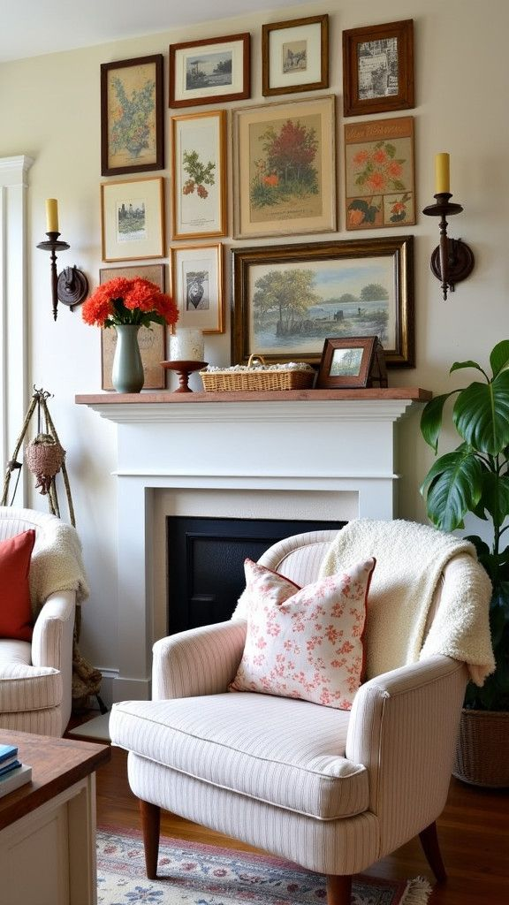
12. Create a Neutral Mantel With Ceramic Vases
Neutral ceramics can make a mantel feel sophisticated without adding too much color.
Look for cream, beige, taupe, warm white, stone, or soft gray pieces.
The important part involves mixing shapes and heights. A rounded vase next to a tall narrow vessel creates more interest than three identical containers.
Combining ceramics with different textures makes the whole display feel more tactile and individual, rather than like a matched set.
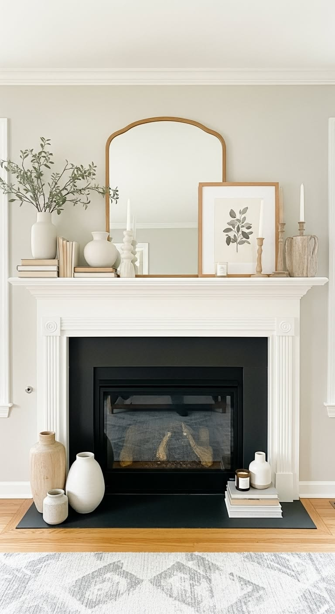
13. Style a Cozy Mantel With Candlesticks
Candlesticks instantly create that cozy evening feeling.
Try brass candlesticks for traditional rooms, black metal for modern spaces, or wooden candlesticks for rustic interiors.
You don't need identical pairs, either. Mixing candlestick silhouettes while keeping the metal finish consistent works just as well.
Odd numbers of things tend to look better than even ones, which is part of why I often prefer three candlesticks at slightly different heights, the arrangement feels more relaxed that way.
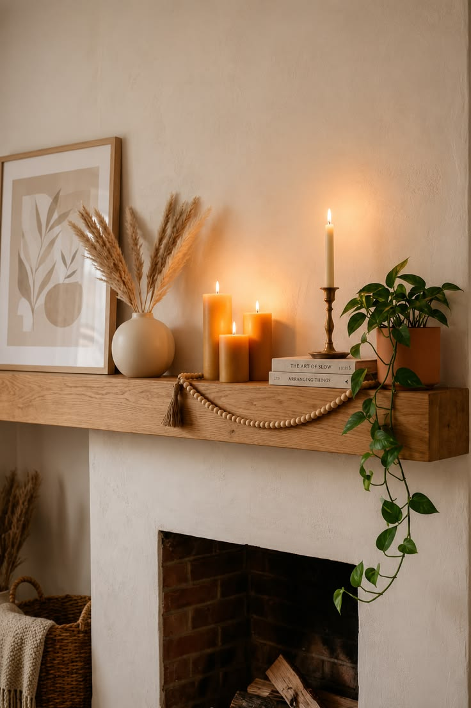
14. Bring in Natural Elements
Branches, dried flowers, greenery, pinecones, driftwood, and woven baskets can make a fireplace feel instantly warmer.
You don't even need elaborate floral arrangements. A few tall branches in a ceramic vase can create enough height and movement.
Natural materials also work beautifully with farmhouse, cottage, rustic, Scandinavian, and organic modern interiors.
I especially like this approach when the room already contains wood, linen, stone, or other natural textures.
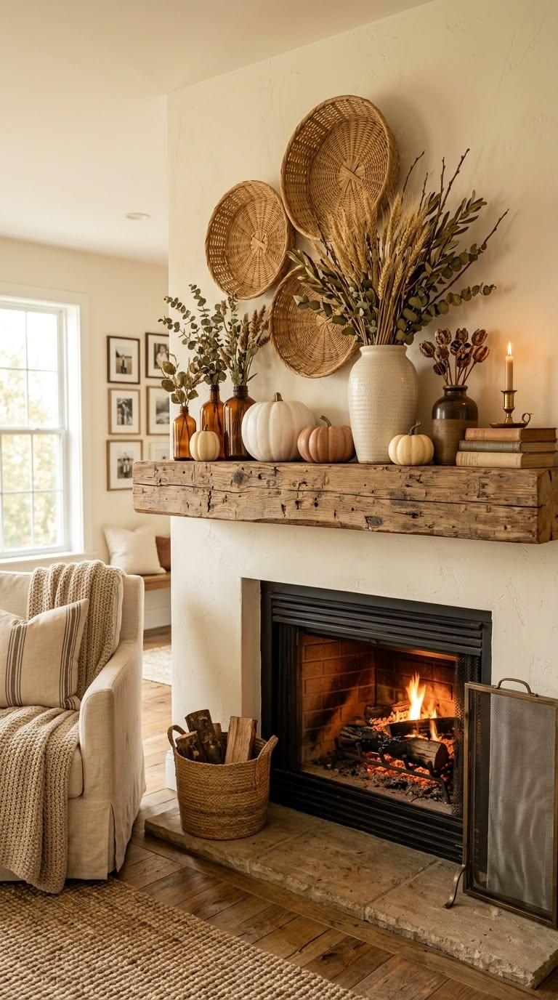
15. Use Asymmetrical Mantel Decor
Want something more relaxed? Break the symmetry.
Place a large artwork slightly off-center and balance it with several smaller objects on the opposite side. Try combining a vase, candlestick, and small sculpture.
Both symmetrical and asymmetrical mantel arrangements can work, and different object heights can create real balance without requiring identical pieces on each side.
The trick involves visual weight, not matching quantities.
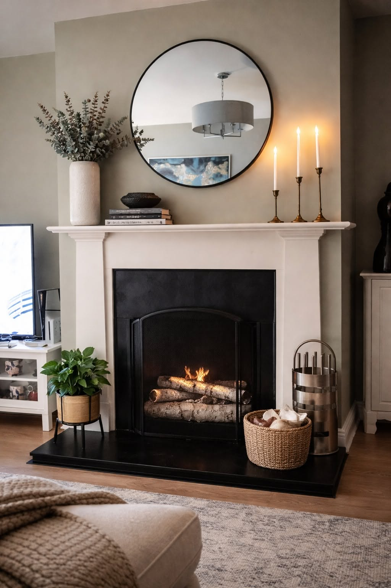
16. Add Symmetry With Matching Vases
If you prefer traditional decorating, symmetry gives you an easy formula.
Place a large central mirror or artwork above the fireplace. Then position matching vases, lamps, candlesticks, or urns on each side.
Symmetry creates an orderly, polished appearance, especially in formal living rooms.
You can soften the look with branches, greenery, or flowers so the arrangement doesn't feel too rigid.
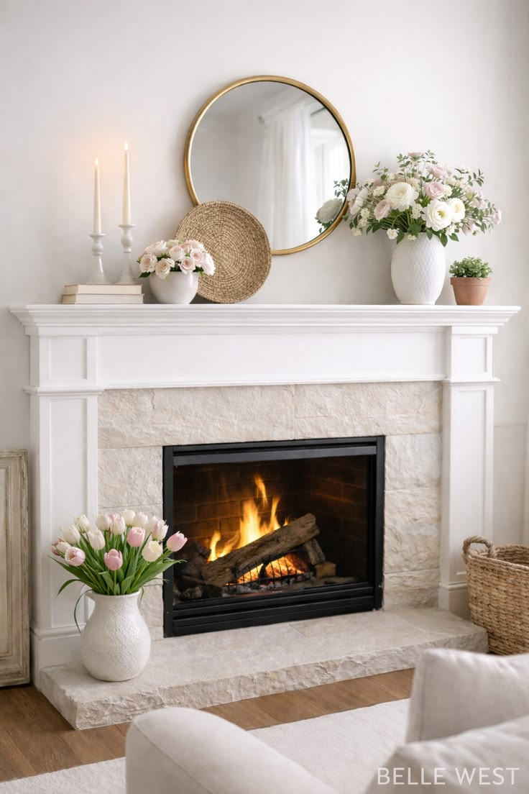
17. Try a Minimalist Mantel With One Statement Piece
Sometimes the best mantel decor involves barely any decor.
Place one large sculpture, oversized vase, mirror, or artwork above the fireplace and leave the shelf mostly empty.
This approach works particularly well with modern mantel decor because it lets the architecture become part of the design.
A dramatic fireplace already has plenty of visual weight. You don't need to decorate it until it disappears.
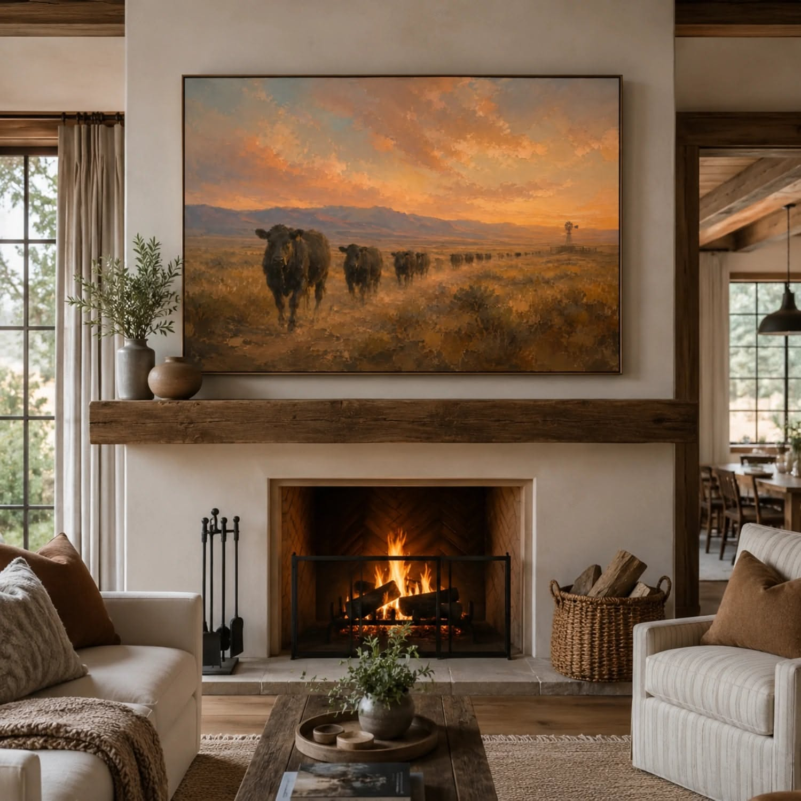
18. Layer Artwork for a Collected Mantel
Instead of hanging one picture, lean two or three pieces against the wall.
Start with the largest artwork at the back. Add a smaller frame slightly in front, then introduce a little decorative object to break up the straight lines.
Using odd numbers and overlapping the artwork slightly is what creates that collected appearance in the first place.
I love this approach because you can change the smaller pieces whenever you get bored. And if you're anything like me, you'll get bored eventually.
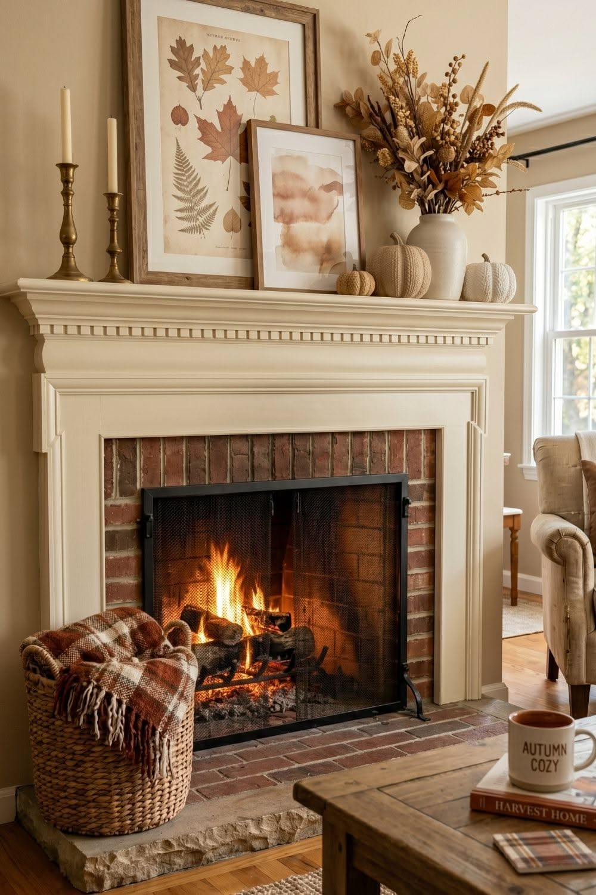
19. Create a Classic Mantel With a Large Mirror
A large mirror above the fireplace gives you one of the easiest ways to create an elegant mantel.
Choose a frame that connects with other finishes in the room. Brass works beautifully with warm neutrals, while black creates stronger contrast.
Keep the accessories underneath fairly simple. A pair of candlesticks and one vase can easily finish the arrangement.
The mirror also reflects light around the room, which makes this mantel decor idea especially useful in smaller or darker living rooms.
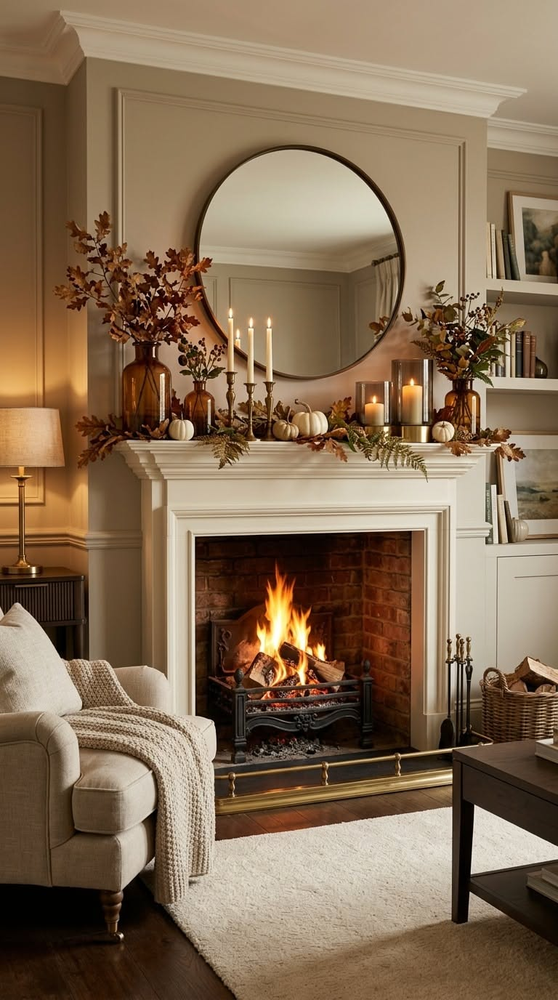
How Do You Style a Mantel Without Making It Look Cluttered?
Start with one strong focal point. Then build around it.
I usually prefer a large mirror, oversized artwork, or substantial decorative object as the anchor. Smaller accessories can then create balance without competing for attention.
Scale matters more than people expect. If you place tiny objects across a large mantel, the fireplace can look unfinished. If you place ten huge objects together, congratulations, you have created a decor traffic jam.
A good rule of thumb is choosing a statement piece that reaches roughly two-thirds of the mantel's width, with layering and varied heights doing the rest of the work to create visual interest.
Symmetry can be safe, but a display genuinely comes alive once you start mixing heights, angles, and layers that actually tell a story.
That idea works especially well if you want your mantel to feel collected rather than overly coordinated.
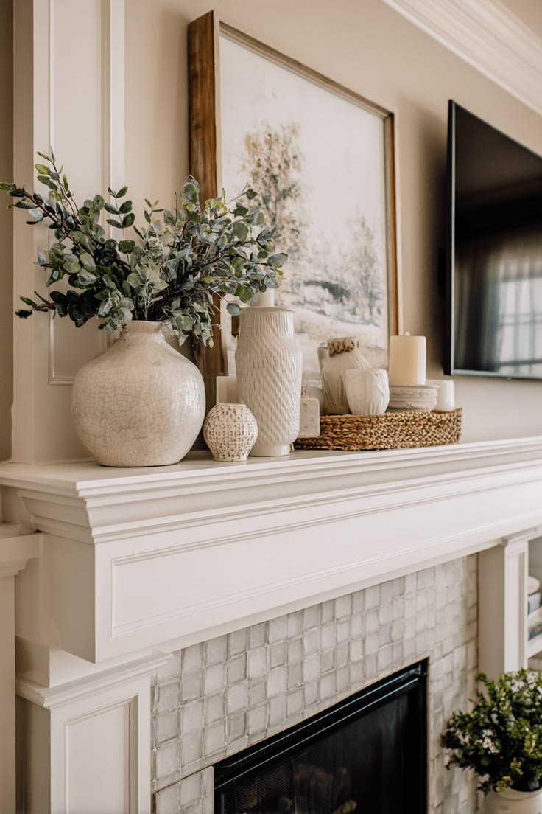
What Should You Put on a Mantel?
Before choosing individual pieces, think about what you want your fireplace to communicate. Do you want it to feel warm and traditional, clean and modern, rustic and relaxed, or collected and eclectic?
A mantel works as a natural focal point mostly because it sits right at eye level, and it works best treated as part of the larger fireplace composition rather than styled in isolation from the firebox and hearth below it.
It's a living room's visual anchor, and it deserves actual personality, not just whatever matches the sofa.
I completely agree with that idea. When I style a mantel, I don't start by asking, "What decorations do I have?" I start with, "What does this room need?"
You can use mirrors and framed artwork, candlesticks and lanterns, ceramic vases, books, plants and branches, sculptural objects, family photographs, vintage or thrifted pieces, seasonal decorations, and baskets or woven accents.
The secret lies in choosing a few pieces that relate to each other rather than trying to display everything you own.
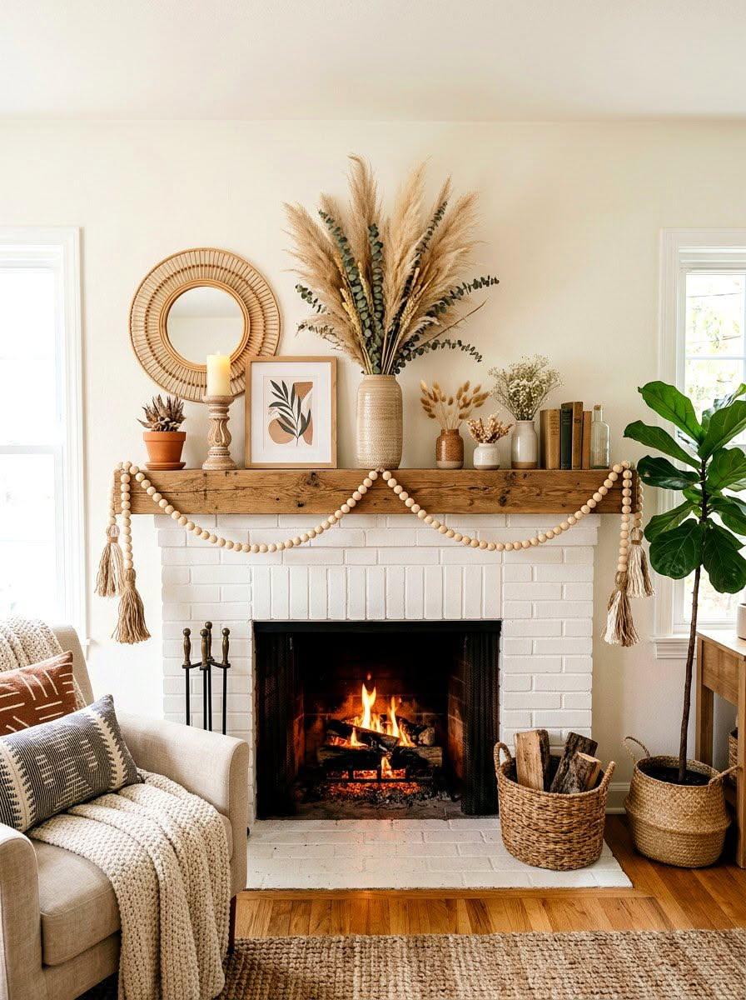
Final Thoughts on Mantel Decor Ideas
The best mantel decor ideas don't rely on expensive accessories or complicated styling rules. They rely on balance, scale, texture, and a few pieces that genuinely fit the room.
Start with one strong focal point. Add a few supporting pieces at different heights, introduce something natural or textured, and then stop before the mantel starts looking crowded.
Whether you prefer modern, farmhouse, cottage, traditional, rustic, or eclectic decor, your fireplace can become one of the most personal parts of your home.
And honestly, if you style it beautifully enough, you might even convince yourself to stop rearranging it every weekend. No promises.